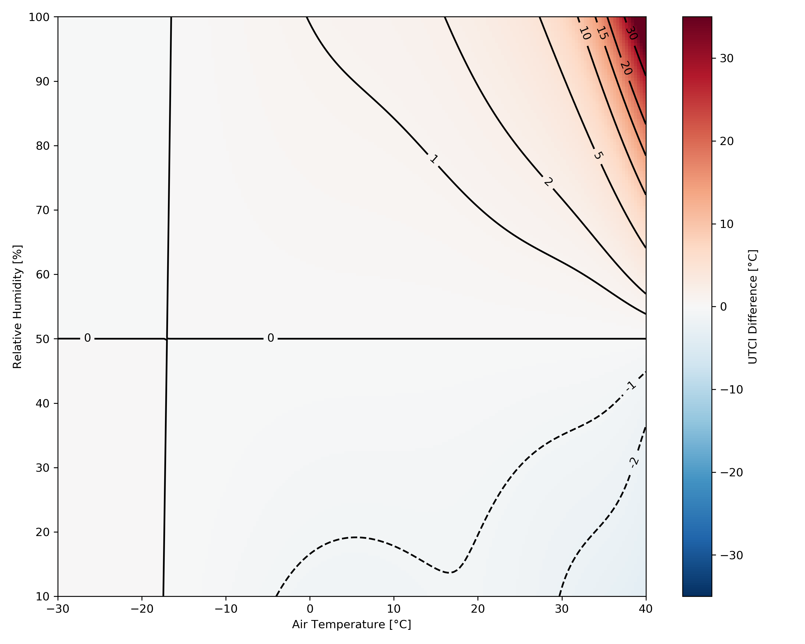
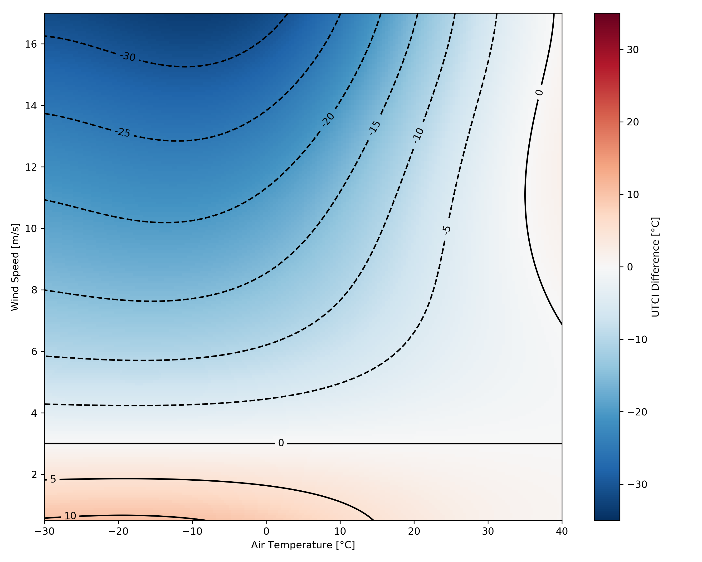
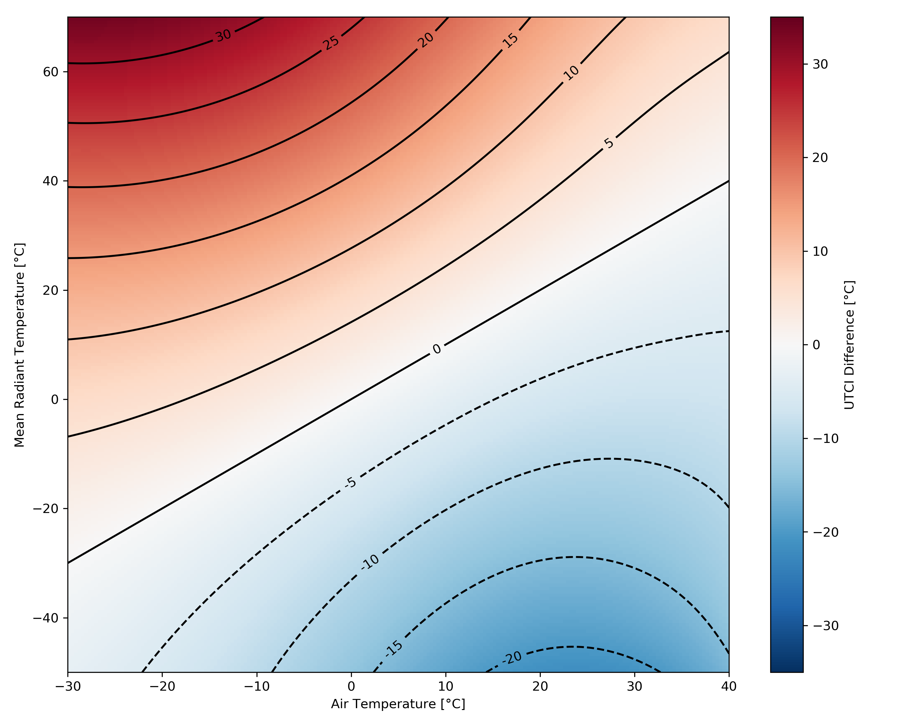

The Universal Thermal Climate Index (UTCI) is a widely used outdoor comfort metric. It is currently released as a 6th order polynomial formula with four inputs: Mean Radiant Temperature, Air Temperature, Wind Speed and Relative Humidity.
I often hear that different measures are needed for achieving outdoor comfort in different climates. These claims often only backed up by experience and I therefore figured that a parameter study of UTCI would be in place to bring some clarity.
Universal Thermal Climate Index Model
Before going into the parameter investigation let me just, for clarity, describe basis for the UTCI model.
“The UTCI is defined as the air temperature (Ta) of the reference condition causing the same model response as actual conditions.” (Błazejczyk et al. 2013)
This can be rewritten as:
- Ta is ambient air temperature.
- TMRT is mean radiant temperature.
- Uwind is wind speed.
- pvapour is water vapour pressure.
The reference condition is defined as an environment with a wind speed (Uwind) of 0.5 m/s at 10m height (approximately 0.3 m/s at 1.1m height), a mean radiant temperature (TMRT) that equals the ambient air temperature (Ta), a vapour pressure (pvapour), which corresponds to a relative humidity of 50%, but having a maximum value of 20hPa. It is furthermore assumed that persons have a metabolic rate of 2.3 MET corresponding to a walking speed of 1.1 m/s and wearing clothing with a thermal resistance modeled by the UTCI-clothing model (Havenith et al. 2012).
The model uses the UTCI-Fiala model (Fiala et al. 2012) as its thermoregulation model. It models an average person of 73.4kg and with a surface body area of 1.85m². The body is represented by 12 spherical or cylindrical parts and contains a total of 187 tissue nodes. The model also includes a model to predict thermoregulatory reactions of the central nervous system, e.g. shivering or sweating. The model computes an UTCI temperature, which can be categorized in terms of thermal stress. The assessment scale can be seen in the table below.
As the complexity of the UTCI is quite large so is the computational power and time needed to perform the analysis. Therefore (Bröde et al. 2012) proposed methods for approximating the UTCI. They came up with two methods: a look-up table of pre-calculated UTCI values and a 6th order regression function. They state that the computing speed (number of calculations per second) of the three methods are as following:
- Actual UTCI model: 1/s
- Look-up table: 100/s
- Regression function: > 100,000/s
With the higher number of computation per second comes with a cost of lower accuracy for the regression function. On the other hand, the 4th dimensional (Ta, TMRT, Uwind, pvapour) look-up table with 100 steps in each dimension, would require 200Mb of storage space. Because of the higher number of calculations per second the regression function is most commonly used. The regression function is only valid within the following bounds:
- Ambient Air Temperature: -50 to +50°C
- Mean Radiant Temperature: 50°C below and 70°C above air temperature
- Wind Speeds at 10m height: 0.5 to 17m/s
- Vapour Pressure: 0hPa to 45hPa
This limits UTCI in some extreme cases, but the model covers the most common scenarios.
Parameter Variation
The parameter study is done by varying MRT, wind speed and relative humidity, plot them against different air temperatures and comparing them to a base case. For all three charts, the air temperature was in the range of: -30°C to 40°C. The base case is: 50% relative humidity, a wind speed at 10m of 3m/s and MRT is equal to air temperature.
Relative humidity, wind speed and MRT was computed for the ranges:
- Relative Humidity: 10% to 90%
- Wind Speed: 0.5m/s to 17m/s
- Mean Radiant Temperature: -50°C to 70°C
If you wish to play with this yourself, then I have made it into a Jupyter Notebook. You can download it here
Relative Humidity

For most air temperature ranges it seems that a deviation from the center of 50% relative humidity doesn't cause an effect on the resulting UTCI. It is only at an air temperature of more than 35°C that a significant UTCI can be seen. However, when the temperature and the relative humidity starts to raise above 35°C and 75% the response in UTCI becomes very large, more than 30°C. If the relative humidity is decreased below 50% it is only at positive air temperatures the UTCI is effected. Decreasing the relative humidity can, however only result in a decrease of UTCI of 2°C.
In short; one should only care about relative humidity in hot climates. No significant changes in UTCI can be observed if the relative humidity is kept below 65%.
Wind Speed

As expected the influence of the wind is mostly decreases the experienced UTCI. If the wind speed is kept under 3m/s the UTCI is increasing. The size of that increment is, however depended on the the air temperature. At low temperatures you will have an increase of up to 10°C UTCI, whereas if you are above 15°C in air temperature, you can't even gain 5°C UTCI. The same pattern is visible at higher wind speeds. At low air temperatures high wind speeds are very effective in decreasing the UTCI. The higher air temperatures you get, the less efficient the wind speed is.
There is a weird phenomenon happening in the upper right corner of the graph. It seems that if you have an air
temperature above 35°C and increases the wind speed to above 7m/s, you will start to increase the UTCI instead of
decreasing it as it happens at slightly lower air temperatures.
In short; if wind speeds are kept low at cold air temperatures, they can help increasing the UTCI (around 5°C UTCI). At higher air temperatures an increase in wind speed can be used to lower the UTCI (around 5°C UTCI).
Mean Radiant Temperature

The influence of mean radiant temperature is a bit more straight forward that the other two. If you have a lower mean radiant temperature than air temperature you will have a decrease in UTCI compared to the reference and vice versa. The relationship is however not linear. The further the mean radiant temperature and air temperature are the larger the effect on UTCI is.
Bibliography
Błazejczyk, Krzysztof, Gerd Jendritzky, Peter Bröde, Dusan Fiala, George Havenith, Yoram Epstein, Agnieszka Psikuta, and Bernhard Kampmann. 2013. “An Introduction to the Universal Thermal Climate Index (UTCI).” Geographia Polonica 86 (1): 5–10. https://doi.org/10.7163/GPol.2013.1.
Bröde, Peter, Dusan Fiala, Krzysztof Blazejczyk, Ingvar Holmér, Gerd Jendritzky, Bernhard Kampmann, Birger Tinz, and George Havenith. 2012. “Deriving the Operational Procedure for the Universal Thermal Climate Index (UTCI).” International Journal of Biometeorology 56 (3): 481–94. https://doi.org/10.1007/s00484-011-0454-1.
Coccolo, Silvia, Jérôme Kämpf, Jean Louis Scartezzini, and David Pearlmutter. 2016. “Outdoor Human Comfort and Thermal Stress: A Comprehensive Review on Models and Standards.” Urban Climate 18. Elsevier Inc.: 33–57. https://doi.org/10.1016/j.uclim.2016.08.004.
Fiala, Dusan, George Havenith, Peter Bröde, Bernhard Kampmann, and Gerd Jendritzky. 2012. “UTCI-Fiala Multi-Node Model of Human Heat Transfer and Temperature Regulation.” International Journal of Biometeorology 56 (3): 429–41. https://doi.org/10.1007/s00484-011-0424-7.
Havenith, George, Dusan Fiala, Krzysztof Blazejczyk, Mark Richards, Peter Bröde, Ingvar Holmér, Hannu Rintamaki, Yael Benshabat, and Gerd Jendritzky. 2012. “The UTCI-Clothing Model.” International Journal of Biometeorology 56 (3): 461–70. https://doi.org/10.1007/s00484-011-0451-4.